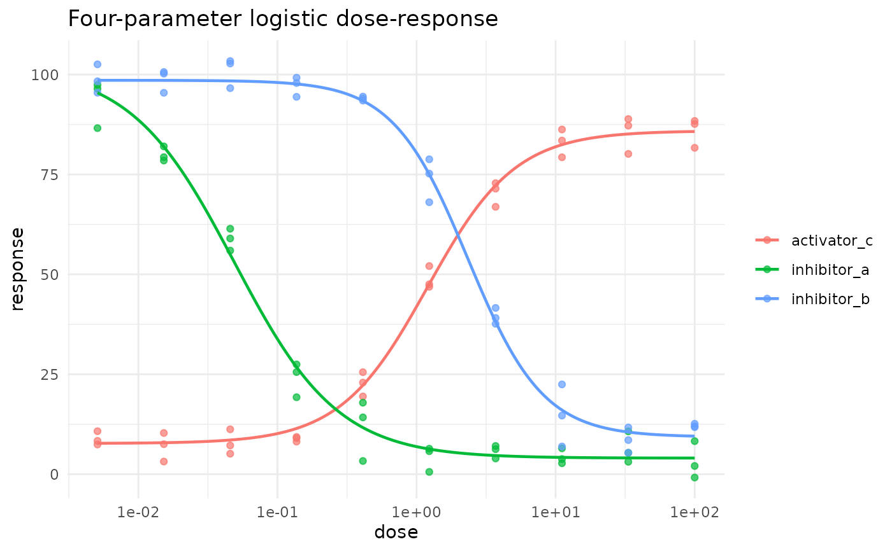
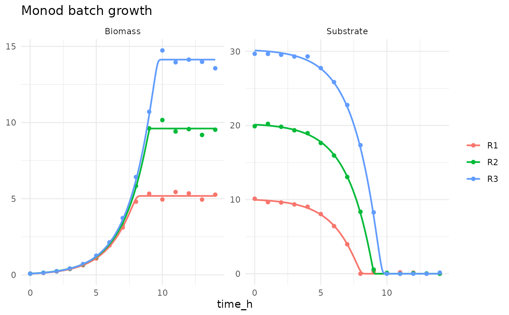
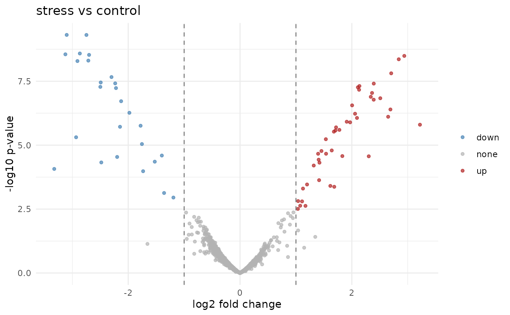
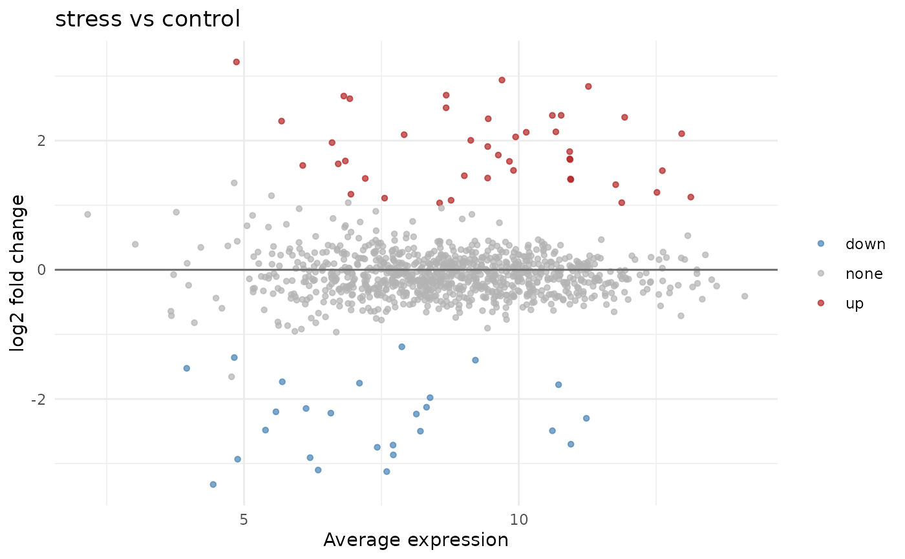

autoplot() methods draw the standard figure for each kind of result:
Arguments
- object
A
<bio_assay>or<bio_omics>result.- ...
Not used.
- type
For differential expression,
"volcano"or"ma".- alpha
Adjusted p-value threshold used to highlight features or gene sets.
- lfc
Absolute log2 fold change threshold for highlighting.
- n
For enrichment results, the number of gene sets to show.
Value
A ggplot2::ggplot() object.
Details
dose-response fits: data and fitted 4PL curves on a log dose axis;
ELISA: the standard curve with back-calculated unknowns;
enzyme kinetics: rates and fitted Michaelis-Menten curves;
Monod growth: biomass and substrate time courses with fitted growth curves;
qPCR: fold changes with confidence intervals on a log2 scale;
differential expression: a volcano plot (
type = "volcano") or an MA plot (type = "ma");enrichment: the most significant gene sets.
Examples
fit <- bio_dose_response(dose_response_sim, dose, response, .by = compound)
autoplot(fit)

growth <- bio_monod_growth(fermentation_sim, time_h, biomass_g_l,
substrate = glucose_g_l, .by = reactor
)
autoplot(growth)

de <- bio_diff_expr(expression_sim, gene, sample, count, condition,
treatment = "stress", reference = "control", transform = "log2_cpm"
)
autoplot(de)

autoplot(de, type = "ma")
